A. GIMP Filters:-
Filters are one of the most used features for photo editing. It is a unique tool that takes an input layer or image, applies a mathematical algorithm to it, and provides a layer or image in a modified format. GIMP has various Filters such as Blur, enhance, distorts, light and Shadow, etc.
The GIMP filter menu contains all the filter tools:-
GIMP Filter menu can be browsed by selecting the Filter option from the menu bar. It contains the following tools:
Repeat Last
Re-Show Last
Reset all Filters
Blur
Enhance
Distorts
Light and Shadow
Noise
Edge Detect
Generic
Combine
Artistic
Decor
Map
Render
Web
Animation
Repeat Last:-
The Repeat Last tool is used to perform the last executed action with the same configuration. It will not show any dialog or confirmation message. To execute the last action, select it from the filter menu or stroke the CTRL+F keys.
Re-Show Last:-
The Re-Show last tool is also used to perform the last executed action with the same configuration. It is similar to repeat the last action, the difference between both the tools is it displays a dialog for configuration. To perform the re-show last action, select it from the filters menu or stroke SHIFT+CTRL+F keys.
Reset All Filters:-
The Reset All Filters tool generally runs a plug-in and displays a dialog with all of the previously initialized settings. It is useful for recovering former setting values. To reset the previous initialized settings, select it from the filter menu.
Blur:-
The Blur tool is used to blur the objects or parts of the image in different ways. It also works on a selection. There may be some leakage of colors from the unblurred area to the blurred area.
The Blur sub-menu contains the following blur effects:-
Focus Blur
Gaussian Blur
Lens Blur
Mean curvature Blur
Median Blur
Pixelize
Selective Gaussian Blur
Variable Blur
Circular Motion Blur
Linear Motion Blur
Zoom Motion Blur
Tileable Blur
Original image (Before Blur):-
Enhance:-
The Enhance filters are used to reimburse image defects such as dust particles, noise, interlaced frames, and insufficient sharpness. It is a comprehensive and useful tool for photo editing.
The Enhance sub-menu contains the following effects:
Antialias
Deinterlace
High Pass
Noise Reduction
Red Eye Removal
Symmetric Nearest Neighbor
Sharpen
Despeckle
Destripe
NL Filter
Wavelet-decompose
Each of the filters has an interactive and unique effect on the image. Select the desired enhance filter from the above menu to use it.
Distorts:-
The distorts filter is used to transform the image in different ways. The distort sub-menu contains the following tools for transforming the image:
Apply Lens
Emboss
Engrave
Lens Distortion
Kaleidoscope
Mosaic
Newsprint
Polar coordinates
Ripple
Shift
Spherize
value Propagate
Video Degradation
Waves
Whirl and Pinch
Wind
Curve Bend
Emboss
page curl
Light and Shadow:-
The Light and Shadow tool is also one of the most used tools in photo editing. In this sub-menu, you can find the two group of effects
Light effects:-
The light effects are used to render several illumination effects of the image.
Shadow effects:-
The Shadow effects are used to create various kinds of shadows.
The Light and Shadow sub-menu contains the following tools:
Light effects:-
Bloom
Supernova
Lens Flare
Gradient Flare
Lightning effects
Sparkle
Shadow Effects:-
Drop Shadow
Long Shadow
Vignette
Drop Shadow (legacy)
Perspective
Xach effect
All of the above effects have an interactive and unique effect on the image. Select the effect which you want to apply to the image. It is useful for creating an interactive image.:
Noise:-
Noise filters are used to add noise to the current layer or selection. The noise in the image is the random variation of brightness or color information. It is a beneficial aspect of the image to clarify it. Usually, the noise can be produced by the image sensor, digital camera, or circuitry of a scanner.
The noise sub-menu has the following noise features:
CIE lch Noise
HSV Noise
Hurl
Pick
RGB Noise
Slur
Spread
Every noise tool has a unique effect on the image. It can be selected from the Filters-> Noise sub-menu.
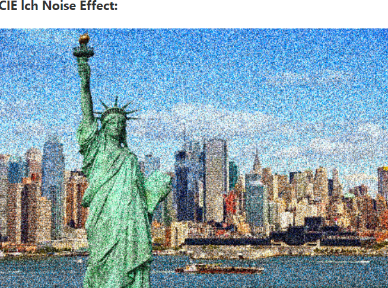
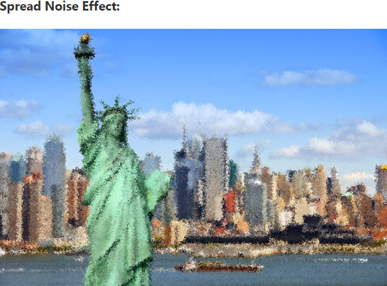
Edge Detect:-
The Edge Detect tool is used to search the borders between different colors. It is useful for making selections and other artistic purposes. This feature is based on gradient calculation methods. It contains the following edge detection tools:
Difference of Gaussians
Edge
Laplace
Neon
Sobel
Image Gradient
Difference of Gaussians (legacy)
Each of the above tools is based on some specific algorithms and has a unique behavior. However, all tools detect the edge of the image.
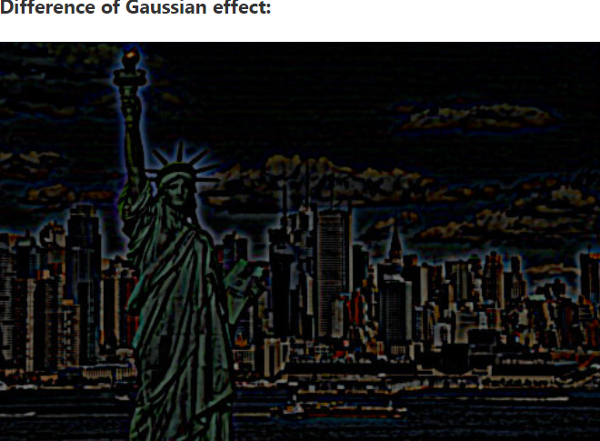
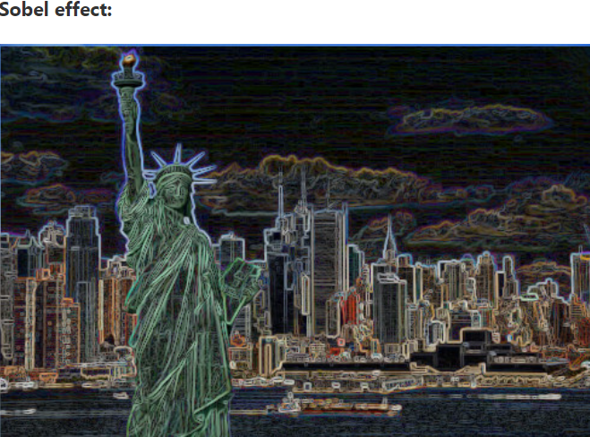
Generic:-
The Generic tool brings all filters together, which can't be placed elsewhere. The generic sub-menu contains the following tools:
Convolution Matrix
Distance Map
GEGL Graphs
Normal Map
Dilate
Erode
> All of the above tools have a unique effect on the image. Like the Convolution Matrix tool allows us to build a custom filter.
> The Distance Map tool allows us to replace each pixel in the image with a gray value dependent on the nearest obstacle pixel's distance.
> The Dilate tool allows us to widen and enhances dark areas of the current layer or selection.
Combine:-
The Combine tool is used to combine the two or more images into one image. It provides two options for merging:
Depth Merge
Filmstrip
Artistic:-
The Artistic tool is used to create artistic effects like cubism, oil painting, canvas, and many more. It contains the following sub-menu:
Apply Canvas
Cartoon
Cubism
Glass Tile
Oilify
Photocopy
Simple Linear Iterative Clustering
Soft glow
Waterpixels
Cartoon (legacy)
Clothify
GIMPPrecessionist
Photocopy (legacy)
Predator
Van Gogh
Weave
All of the above tools have their unique behavior and feature. To apply any of the above effects on the image, select it from the filters menu.
Decor:-
The Decor tools have image-dependent Script-Fu scripts used to create decorative borders and add some special effects to the image.
Add Bevel
Add Border
Coffee Stain
Fog
Fuzzy Border
Old Photo
Round Corners
Slide
Stencil Carves
Stencil Chrome
All of the above tools have some unique and special effects on the image. To apply an effect, select it from the filters menu.
Map:-
The Map tool is used to map the image to object; it uses an object "map" to modify the image. It is useful for creating a 3D effect on the image. It can also map a part of the image ( Using Illusion tool) and bend a text (Displace tool) along the curve.
Bump Map
Displace
Fractal Trace
Illusion
Little Planet
Panorama Projection
Recursive Transform
Paper Title
Tile Seamless
Fractal Trace (legacy)....
Map Object
Tile
warp
Each of the above tools has a unique and special effect. To apply any of the above effects, select it from the Filters-> Map menu.
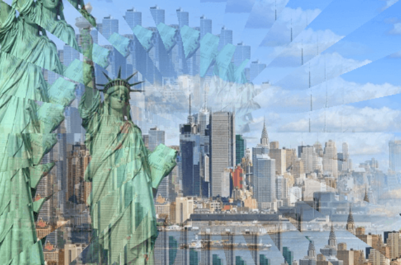
Render:-
The render tool is used to create patterns from scratch. Most of the filters and effects work on a layer or a selection, but they create the effect from scratch.
Fractal
Noise
Pattern
Circuit
Gfig
Lava
Line Nova
Sphere Designer
Spyrogimp
To apply any of the above effects, select it from the Filters-> Render menu.
Web:-
The web tool is used on images mentioned for web sites. It is useful for the ImageMap feature to add clickable "hot spots" on the image.
Semi Flattern
Image Map
Slice
Animation:-
The Animation tool allows us to view and optimize our animations. The Animation sub-menu contains the following tools:
Blend
Burn-in
Rippling
Spinning Globe
Waves
Optimize
Optimize ( For GIF)
Playback
Unoptimized
Each of the above tools has a unique effect. To apply any of the above effects, select it from the Filters-> Animation menu.
A. Color Balance:-
The color balance tool modifies the color balance of the active selection or layer. Changes are not drastic. This tool is suitable to correct predominant colors in digital photos.
Activating the Tool:-
You can get to the Color balance through: Colors → Color Balance…
Color Balance options:-
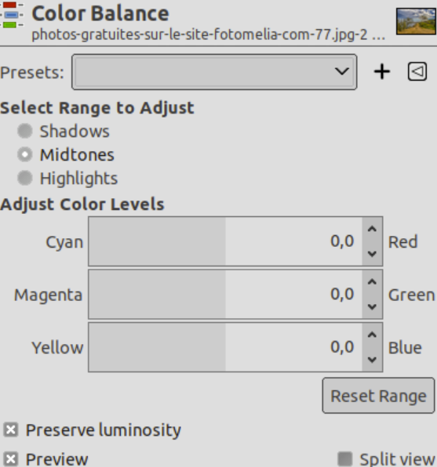
Presets:-
“Presets” are a common feature for several Colors command.
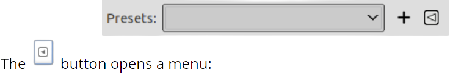
Preset Menu:-
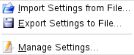
Select range to adjust:-
Selecting one of these options restricts the range of colors which are changed with the sliders or input boxes for Shadows (darkest pixels), Midtones (medium pixels) and Highlights (brightest pixels).
Adjust color levels:-
Sliders and range from the three RGB colors to their complementary colors (CMY). The zero position corresponds to the current level value of pixels in the original image. You can change the pixel color either towards Red or Cyan, Green or Magenta, Blue or Yellow.
Reset Range:-
This button sets color levels of the selected range back to the zero position (original values).
Preserve Luminosity:-
This option ensures that brightness of the active layer or selection is maintained. The Value of brightest pixels is not changed.
Preview and Split view:-
Preview: this option is checked by default and displays changes directly on canvas.
Split view: if this option is checked, the image window is divided in two parts. Changes appear in the left part and the right part remains unchanged for comparison.
A. Dodge/Burn:-
Dodge tool
The Dodge or Burn tool uses the current brush to lighten or darken the colors in your image. The mode will determine which type of pixels are affected.
Activating the Tool:-
There are different possibilities to activate the tool: From the image-menu: Tools → Paint Tools → Dodge / Burn.
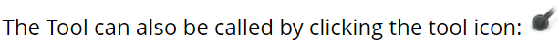
or by using the Shift+D keyboard shortcut.
“Dodge/Burn” tool options:-
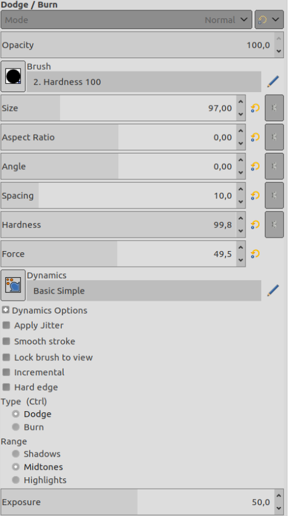
Mode:-
You can obtain a great variety of special effects in this way. The Mode option is only usable for tools that can be thought of as adding color to the image: the Pencil, Paintbrush, Airbrush, Ink, and Clone tools.
Opacity:-
The Opacity slider sets the transparency level for the brush operation. the tool creates a transparent layer above the active layer and acts on that layer. Changing Opacity in the Tool Options has the same effect that changing opacity in the Layers dialog would have in the latter situation. It controls the “strength” of all paint tools, not just those that paint on the active layer.
Brush:-
The brush determines how much of the image is affected by the tool, and how it is affected, when you trace out a brushstroke with the pointer. GIMP allows you to use several different types of brushes, The same brush choices are available for all paint tools except the Ink tool, which uses a unique type of procedurally generated brush.
Size:-
This option lets you to modify precisely the size of the brush. You can use the arrow keys to vary by ±0.01 or the Page-Up and Page-Down keys to vary by ±1.00.
Aspect Ratio:-
This determines the ratio between the height and the width of the brush. The slider is scaled from -20.00 to 20.00 with the default value set to 0.00. A negative value from 0.00 to -20 will narrow the height of the brush while a positive value between 0.00 and 20.00 indicates the narrowing rate of the width of the brush.
Angle:-
This option makes the brush turn round its center. This is visible if the brush is not circular or made from a rotated figure.
Spacing:-
This option sets the distance between the brush marks in a stroke.
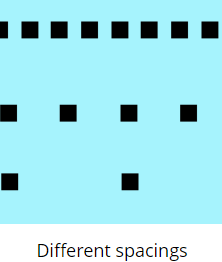
Hardness:-
Modifies the size of the brush hard center.
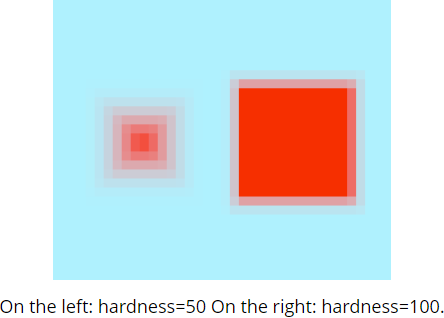
Force:-
Modifies gain.
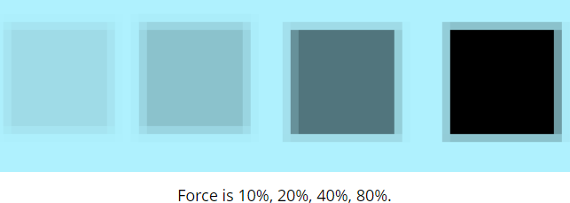
Dynamics:-
Brush dynamics let you map different brush parameters to several input dynamics. They are mostly used with graphic tablets, but some of them are also usable with a mouse.
When stroking paths and selections using a paint tool there is an option to select “Emulate brush dynamics”. That means that when you stroke, brush pressure and velocity are varying along the length of the stroke. Pressure starts with zero, ramps up to full pressure and then ramps down again to no pressure. Velocity starts from zero and ramps up to full speed by the end of the stroke.
1. Fade Options: This slider determines the length of the fading. What will actually happen depends on the setting of the Dynamic.
2. Color Options: Here you can choose the gradient to use as color source when using the brush with the color option set.
Apply Jitter:-
You know “spacing” in brush strokes: strokes are made of successive brush marks which, when they are very near, seem to draw a continuous line. Jitter is also available in the Paint Dynamic Editor where you can connect jitter to the behavior of the brush.
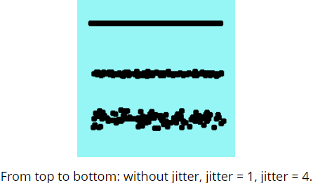
Smooth Stroke:-
1. This option doesn't affect the rendering of the brush stroke but its “shape”. It takes away the wobbles of the line you are drawing. It makes drawing with a mouse easier.
2. When this option is checked, two setting areas appear, Quality and Weight. You can change the default values to adapt them to your skill.
3. High weight values rigidifies the brush stroke.
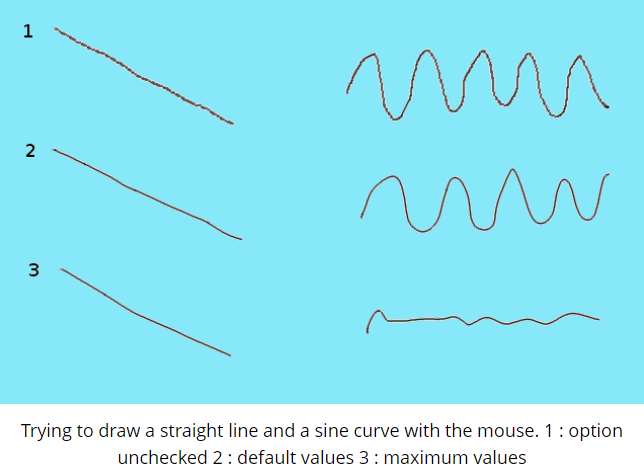
Lock brush size to view:-
1. When you are working on an image that is bigger (in pixels) than your screen, you have to zoom in and out a lot. This option allows a very natural "iterative refinement" process with no need to repeatedly ask the application to change brush size as you go between the broad strokes and the detailing.
2. If the brush size is relative to the canvas (option unchecked), zooming in makes the brush zoomed also and it appears larger (takes up more pixels on the screen). If you're working with a 300 pixels radius brush and you zoom in from 12% to 100%, the brush is now half the size of your screen! So you have to shrink the brush back down.
3. If the brush size is relative to the screen (option checked), then when you zoom in, the size of the displayed brush doesn't change, it looks smaller and so you can work on tiny details.
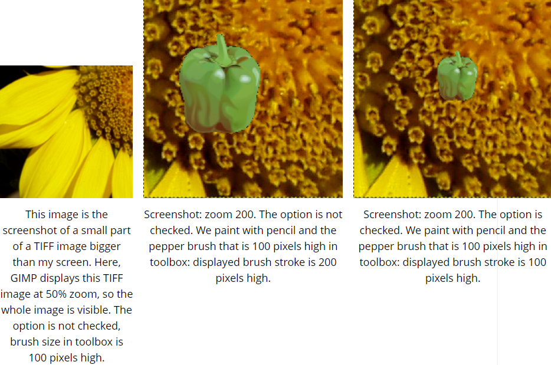
Incremental:-
Applies the effect incrementally as the mouse pointer moves.
As Same As 2nd Question Correcting Color Balance..........
A. Eraser:-
Eraser tool icon in the Toolbox

The Eraser is used to remove areas of color from the current layer or from a selection of this layer. If the Eraser is used on something that does not support transparency, then erasing will show the background color, as displayed in the Color Area of the Toolbox. Otherwise, erasing will produce either partial or full transparency, depending on the settings for the tool options.
Eraser and Alpha channel

If you need to erase some group of pixels completely, leaving no trace behind of their previous contents, you should check the "Hard edge" box in the Tool Options. Otherwise, sub-pixel brush placement will cause partial erasure at the edges of the brush-stroke, even if you use a hard-edged brush.
Activating the tool:-
You can activate this tool in several ways:
From the image menu through Tools → Paint Tools → Eraser;
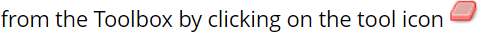or from the keyboard using the shortcut Shift+E.
Tool Options for the Eraser tool
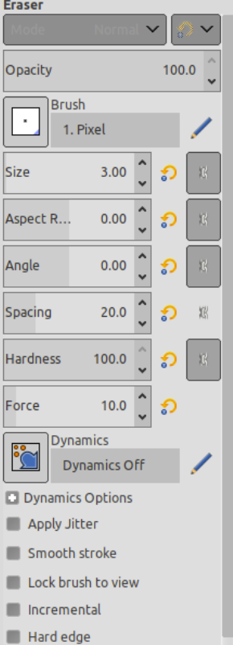
Mode:-
You can obtain a great variety of special effects in this way. The Mode option is only usable for tools that can be thought of as adding color to the image: the Pencil, Paintbrush, Airbrush, Ink, and Clone tools.
Opacity:-
The Opacity slider sets the transparency level for the brush operation. the tool creates a transparent layer above the active layer and acts on that layer. Changing Opacity in the Tool Options has the same effect that changing opacity in the Layers dialog would have in the latter situation. It controls the “strength” of all paint tools, not just those that paint on the active layer.
Brush:-
The brush determines how much of the image is affected by the tool, and how it is affected, when you trace out a brushstroke with the pointer. GIMP allows you to use several different types of brushes, The same brush choices are available for all paint tools except the Ink tool, which uses a unique type of procedurally generated brush.
Size:-
This option lets you to modify precisely the size of the brush. You can use the arrow keys to vary by ±0.01 or the Page-Up and Page-Down keys to vary by ±1.00.
Aspect Ratio:-
This determines the ratio between the height and the width of the brush. The slider is scaled from -20.00 to 20.00 with the default value set to 0.00. A negative value from 0.00 to -20 will narrow the height of the brush while a positive value between 0.00 and 20.00 indicates the narrowing rate of the width of the brush.
Angle:-
This option makes the brush turn round its center. This is visible if the brush is not circular or made from a rotated figure.
Spacing:-
This option sets the distance between the brush marks in a stroke.
Hardness:-
Modifies the size of the brush hard center.
Force:-
Modifies gain.
Dynamics:-
Brush dynamics let you map different brush parameters to several input dynamics. They are mostly used with graphic tablets, but some of them are also usable with a mouse.
When stroking paths and selections using a paint tool there is an option to select “Emulate brush dynamics”. That means that when you stroke, brush pressure and velocity are varying along the length of the stroke. Pressure starts with zero, ramps up to full pressure and then ramps down again to no pressure. Velocity starts from zero and ramps up to full speed by the end of the stroke.
1. Fade Options: This slider determines the length of the fading. What will actually happen depends on the setting of the Dynamic.
2. Color Options: Here you can choose the gradient to use as color source when using the brush with the color option set.
Apply Jitter:-
You know “spacing” in brush strokes: strokes are made of successive brush marks which, when they are very near, seem to draw a continuous line. Jitter is also available in the Paint Dynamic Editor where you can connect jitter to the behavior of the brush.
Smooth Stroke:-
1. This option doesn't affect the rendering of the brush stroke but its “shape”. It takes away the wobbles of the line you are drawing. It makes drawing with a mouse easier.
2. When this option is checked, two setting areas appear, Quality and Weight. You can change the default values to adapt them to your skill.
3. High weight values rigidifies the brush stroke.
Lock brush size to view:-
1. When you are working on an image that is bigger (in pixels) than your screen, you have to zoom in and out a lot. This option allows a very natural "iterative refinement" process with no need to repeatedly ask the application to change brush size as you go between the broad strokes and the detailing.
2. If the brush size is relative to the canvas (option unchecked), zooming in makes the brush zoomed also and it appears larger (takes up more pixels on the screen). If you're working with a 300 pixels radius brush and you zoom in from 12% to 100%, the brush is now half the size of your screen! So you have to shrink the brush back down.
3. If the brush size is relative to the screen (option checked), then when you zoom in, the size of the displayed brush doesn't change, it looks smaller and so you can work on tiny details.
Incremental:-
Applies the effect incrementally as the mouse pointer moves.
Clone Tool:-
Clone tool icon in the Toolbox
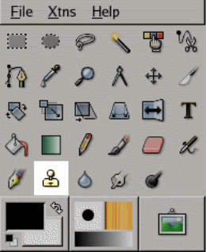
1. The Clone tool uses the current brush to copy from an image or pattern. It has many uses: one of the most important is to repair problem areas in digital photos, by "painting over" them with pixel data from other areas. This technique takes a while to learn, but in the hands of a skilled user it is very powerful. Another important use is to draw patterned lines or curves.
2. You do this by holding down the Ctrl key and clicking in the desired source image. Until you have set the source in this way, you will not be able to paint with the Clone tool: the tool cursor tells you this by showing a “forbidden” symbol.
"Forbidden Symbol looks like as shown below figure........."
How to Activate:-
You can activate the Clone tool in several ways :
From the image menu through Tools → Paint Tools → Clone.
 By pressing the c keyboard shortcut.
By pressing the c keyboard shortcut.
Tool Options for the Clone tool
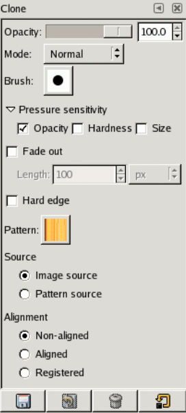
Opacity; Mode; Brush; Pressure Sensitivity, Fade out, Hard Edges
Pattern:-
Clicking on the pattern symbol brings up the Patterns dialog, which you can use to select the pattern to paint with. This option is only relevant if you are cloning from a Pattern source.
Source:-
The choice you make here determines whether data will be copied from the pattern shown above, or from one of the images you have open. If you choose “Image source”, you must tell GIMP which layer to use as the source, by Ctrl-clicking on it, before you can paint with the tool.
Alignment:-
The Alignment mode sets how the source position is offset from each brush stroke.
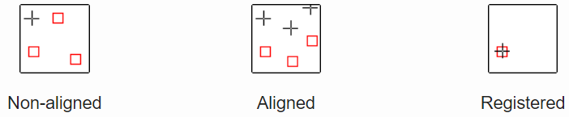
Non-aligned:-
In this mode, each brushstroke is treated separately. For each stroke, the point where you first click is copied from the source origin; there is no relationship between one brush stroke and another. In non-aligned mode, different brush strokes will usually clash if they intersect each other.
Aligned:-
In this mode, the first click you make when painting sets the offset between the source origin and the cloned result, and all subsequent brushstrokes use the same offset. Thus, you can use as many brushstrokes as you like, and they will all mesh smoothly with one another.
Registered:-
This mode copies each pixel in the source to the pixel with the same offset in the target. It is most commonly useful when you want to clone from one layer to another layer within the same image.